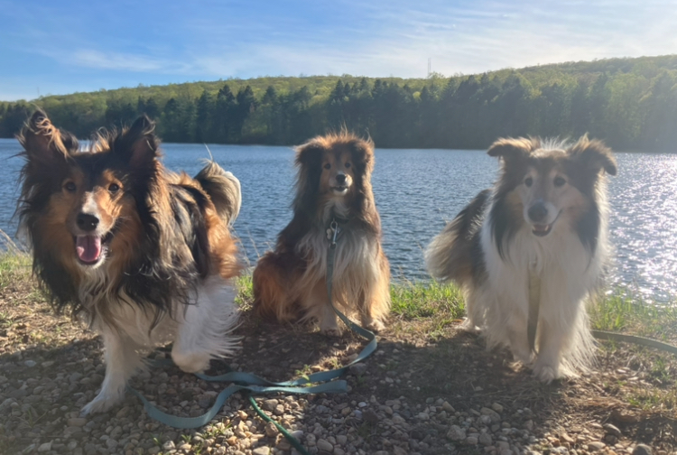
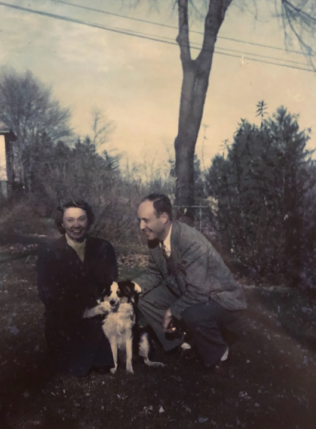
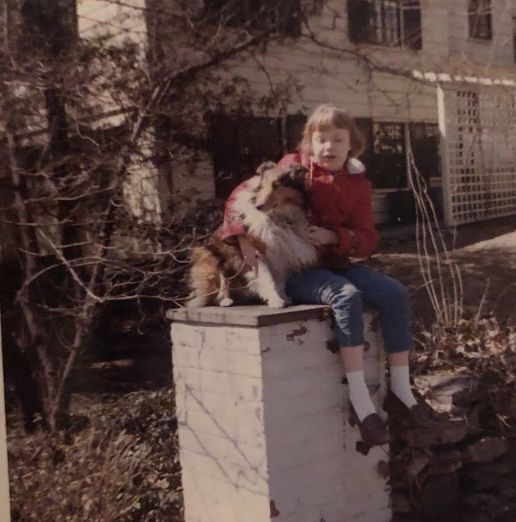
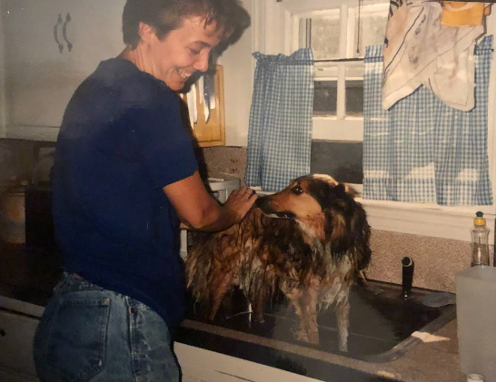
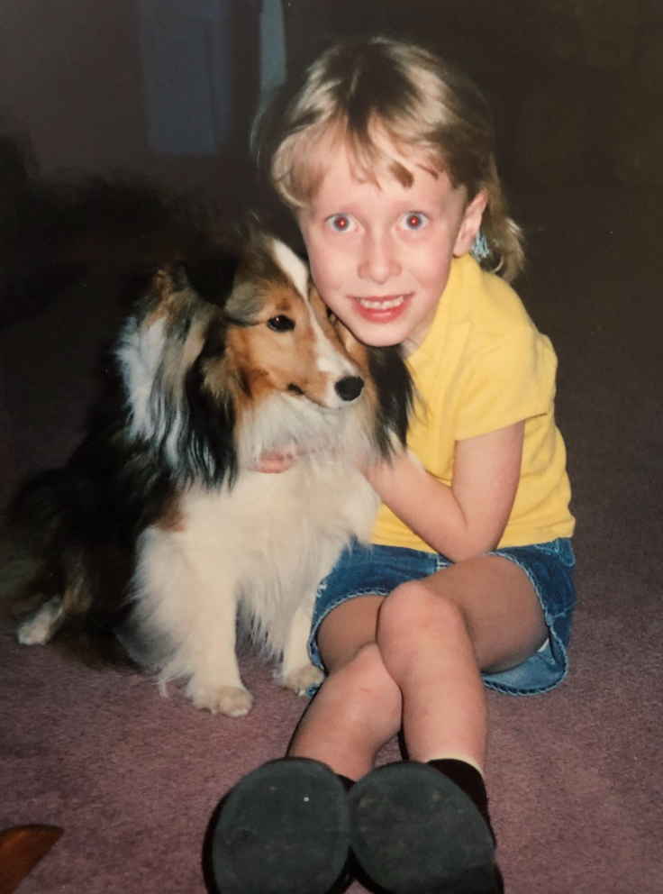

I've had Shelties my entire life, and so has my mother! It all goes back to my maternal grandmother. She had asthma, and was told by her doctor that she could either have a sheltie or a poodle. She chose a sheltie, and the rest was history!
Many people have been confused when I tell this story. Shelties are not hypoallergenic, unlike poodles. They actually shed quite a bit. I have no idea why her doctor told her that.
Nimi is the most recent in a long line of Shelties!
Mr. Chips was my grandmother's first sheltie. My mom had Ronnie and Becky growing up, then Jenny when she graduated college. Mandy was the first dog that I had growing up, and once Kristi was 10, we got Abby! When Kristi passed, we got Bailey so that she wasn't lonely. Nimi definitely prefers to be the only dog of the house, but she plays nice when we go home to visit!



